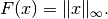
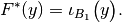

proximal_convex_conj_linfty¶
-
odl.solvers.nonsmooth.proximal_operators.proximal_convex_conj_linfty(space)[source]¶ Proximal operator factory of the Linfty norm/distance convex conjugate.
Implements the proximal operator of the convex conjugate of the functional
F(x) = \|x\|_\infty
with
xinspace.- Parameters
- space
LinearSpaceorProductSpaceofLinearSpacespaces Domain of the functional F
- space
- Returns
- prox_factoryfunction
Factory for the proximal operator to be initialized.
See also
proj_l1orthogonal projection onto balls in the 1-norm
Notes
The convex conjugate
 of the functional
of the functional
is in the case of scalar-valued functions given by the indicator function of the unit 1-norm ball
